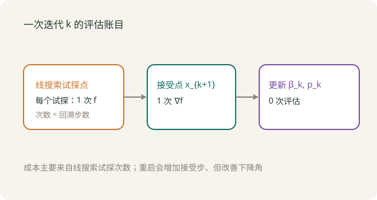

5.2.6 数值表现：评估开销与系数选择
理论给出收敛，却不告诉你哪套系数更快。实际比较要统一线搜索、统一停止准则，并分别统计函数评估与梯度评估。评估开销几乎全部来自线搜索试探，而不是方向更新。
该测什么
比较两个非线性 CG 变体，必须固定线搜索（同一组 Wolfe 参数）、同一停止准则（如 ‖g_k‖≤ε）与同一测试问题集，然后分别统计：接受的迭代步数、函数评估次数、梯度评估次数。
其中评估开销主要来自线搜索试探点（每次 1 次 f）与接受点（1 次 ∇f）；方向更新 β_k、p_k 只是向量运算，几乎不计入。因此“迭代步数少”不等于“评估少”。
方向更新本身只是一次向量组合，不消耗评估：

系数选择的影响
教材 §5.2.6 的结论是定性的：在标准测试问题上，Polak–Ribière 家族（PR、PR+）通常比 Fletcher–Reeves 更省评估，FR 有时非常慢；但 FR 的分析最完整。HS 接近 PR，但对分母敏感。这些都是经验观察，依赖线搜索与问题集，不能当作普适排序。
直觉解释：PR 的 β 可取负值，能在方向变坏时自动退回最速下降；FR 的 β 恒非负，只能靠重启补偿。这与 5.2.4 的下降角讨论一致。
重启的代价与收益
重启会增加接受步数（每次重启都是一次最速下降步），但能恢复下降角、避免停滞。净效果取决于问题：在共享问题集上，FR 往往因重启而大幅改善，PR 家族改善较小。
重启时刻的示意：每隔 m 步把 β 置零，方向回到最速下降。重启增加步数，但恢复下降性，净效果需在实际问题上权衡。
小型评估示范
下面程序在一个 10 维对角正定二次问题上，用精确线搜索分别跑 FR、PR+、HS，统计梯度评估数。三者都在 9 步（10 次梯度评估）内终止 —— 因为二次问题上它们都退化为线性 CG。这说明计数方法可用，但一个二次算例无法区分它们；真正的比较需要非二次问题与 Wolfe 线搜索，属于教材的经验部分。
边界与证据
本页不给具体百分比或排名，因为那些数字依赖测试集、线搜索与实现，教材的经验结论也只在对应实验条件下成立。评估计数只是实现层面的诊断，不代替收敛理论。
交互：维度如何改变评估数
拖动手柄改变对角二次问题的维度 n。在精确线搜索下，所有变体都在 n 步内终止，梯度评估数约为 n；这是线性 CG 的 n 步终止性质的数值体现，不代表非线性问题。
实时模型计算
Python：评估计数的分数断言
下面的程序只依赖标准库，在对角正定二次问题上统计三个变体的梯度评估数，并断言它们都在 n 步内终止。
"""Count gradient and function evaluations for FR, PR+ and HS on a convex quadratic."""
from fractions import Fraction as F
n = 10
Q = [F(i + 1) for i in range(n)]
def grad(x):
return [Q[i]*x[i] for i in range(n)]
def dot(u, v):
return sum(a*b for a, b in zip(u, v))
def run(kind, maxit=200):
x = [F(1)]*n
g = grad(x)
p = [-v for v in g]
grad_evals = 0
for k in range(maxit):
denom = dot(p, [Q[i]*p[i] for i in range(n)])
a = -dot(g, p) / denom
x = [x[i] + a*p[i] for i in range(n)]
gn = grad(x)
grad_evals += 1
if dot(gn, gn) < F(1, 10**18):
break
y = [gn[i] - g[i] for i in range(n)]
if kind == "FR":
b = dot(gn, gn) / dot(g, g)
elif kind == "PR+":
b = max(F(0), dot(gn, y) / dot(g, g))
else:
b = dot(gn, y) / dot(p, y)
p = [-gn[i] + b*p[i] for i in range(n)]
g = gn
return k, grad_evals, dot(gn, gn)
if __name__ == "__main__":
for kind in ("FR", "PR+", "HS"):
k, evals, norm = run(kind)
print(kind, "iters", k, "grad evals", evals, "final |g|^2", norm)
assert norm < F(1, 10**18)